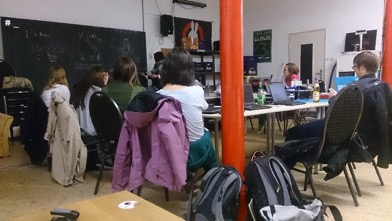
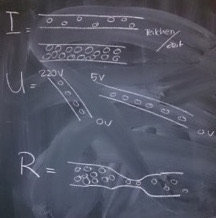
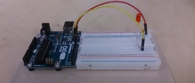

Arduino Basics
2015-07-05 by
Nach kurzem Brainstorming beim "Stammtisch" war klar - Es gibt viele Themen, die wir gemeinsam vertiefen, erarbeiten oder einfach nur bequatschen wollen. Ein erstes Thema, das dabei aufkam war "Grundlagen im Basteln mit Hardware" - und so haben wir uns am 18.06. kurzerhand zum Austausch von Erfahrungen mit Arduinos getroffen.

Zwei von uns haben dabei eine kleine theoretische Einfuehrung gegeben, sodass wir uns unabhaengig von Vorkenntnissen ins Basteln stuerzten konnten.


Wir freuen uns besonders, dass so viele Gesichter aus ganz unterschiedlichen Zusammenhaengen da waren. So hat der erste Geekfem "Themenabend" dank eurer Energie und Offenheit total viel Spass gemacht!
In diesem Sinne - auf zum naechsten "Themenabend" - Ideen und Beteiligung sind wie immer mehr als wilkommen.